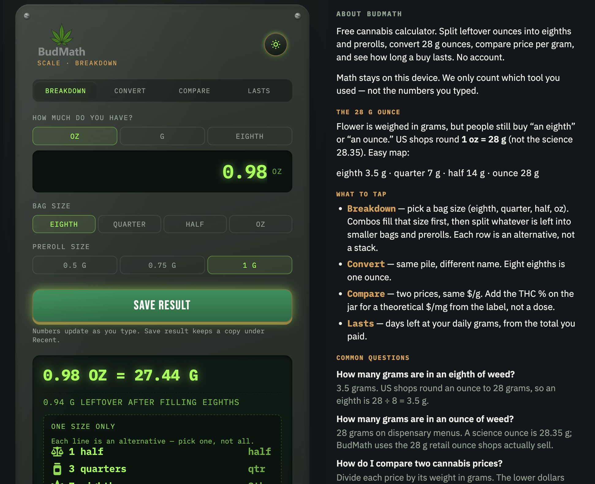
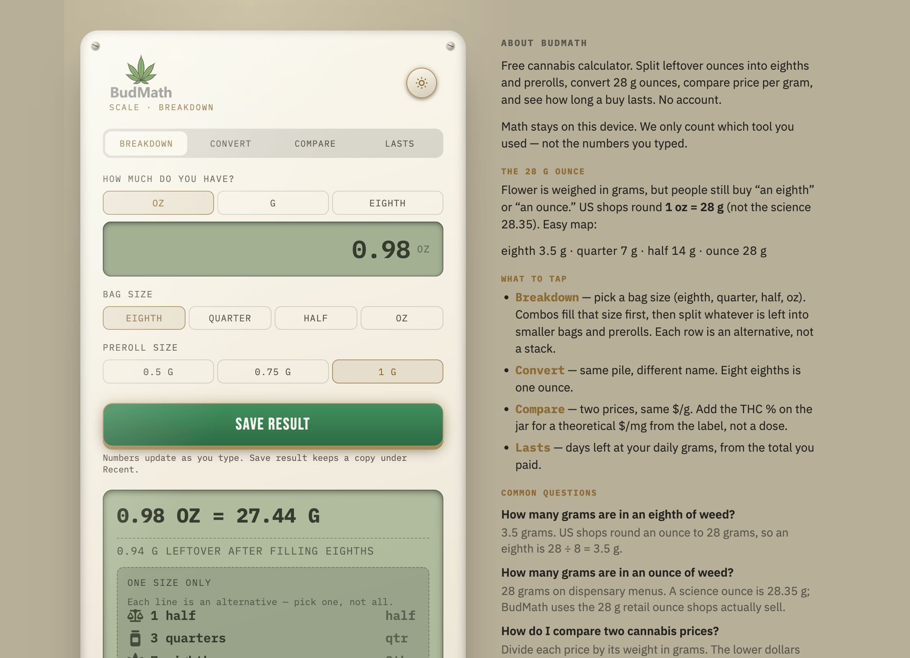
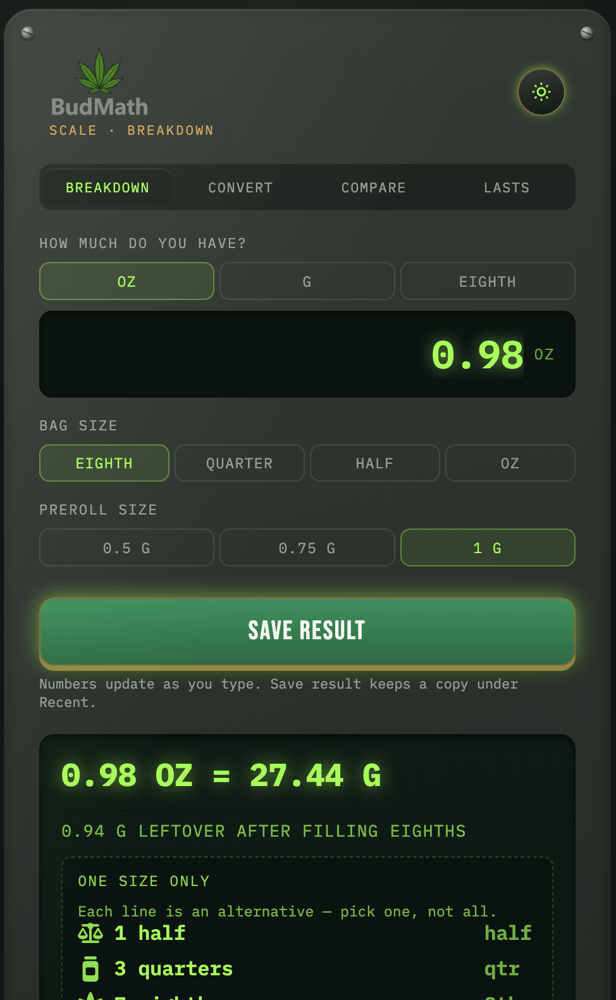
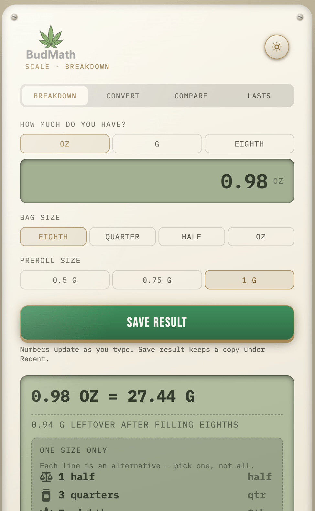

Daily On Plan
Stay on plan. One day at a time.
View project →JamesWare · Utility
Ounces to grams, and the portion mix, without a spreadsheet.


Dispensary math is a handful of fixed fractions (oz, half, quarter, eighth, preroll) that people still re-do in their head or a notes app.
A small web calculator: enter ounces, get grams (1 oz = 28 g) plus mixed combinations. History of the last five runs in localStorage. Dark/light toggle.
One job, in the browser. No account, no shop, no inventory.


Static HTML/CSS/JS (Tailwind). All math and history stay in the browser. No JamesWare backend.
Released at budmath.com. Public repo under Jewhurst Engineering. Small, finished utility — not a store.